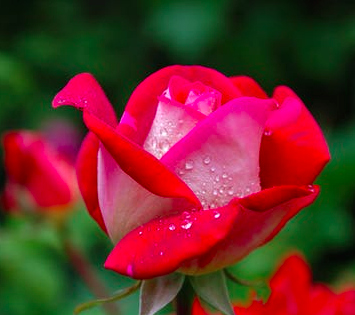
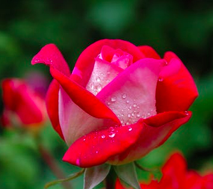
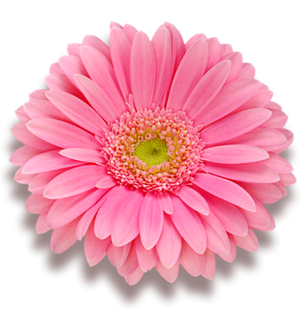
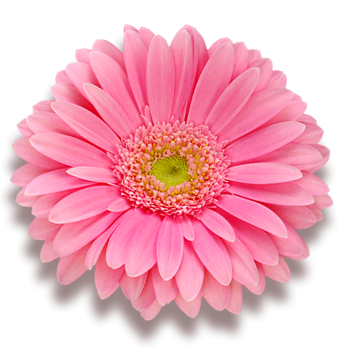

Blumengruß
Der Strauß, den ich gepflücket,Johann Wolfgang von Goethe (1749 - 1823)
Grüße dich vieltausendmal!
Ich habe mich oft gebücket,
Ach, wohl eintausendmal,
Und ihn ans Herz gedrücket
 



 



Der Strauß, den ich gepflücket,Johann Wolfgang von Goethe (1749 - 1823)
Grüße dich vieltausendmal!
Ich habe mich oft gebücket,
Ach, wohl eintausendmal,
Und ihn ans Herz gedrücket
Zu den roten gehören die Mohnblumen und die Rosen. Der Duft der Blumen ist weit süßer in der Luft als in der Hand. Ein Kelch, ein Blatt, ein Dorn An irgendeinem Sommermorgen - Ein Schälchen Tau - Bienen, ein oder zwei - Ein Windhauch - Rascheln in den Zweigen - Und ich bin eine Rose!
Wenn vergnügt sein willst, umgib dich mit Freunden, wenn du glücklich sein willst, umgib dich mit Blumen.
Wohl sind die Königinnen der Blumenwelt die, die auf der Höhe des Frühlings blühen, Maiblumen, Jasmin und Rose. Aber auch noch am gefrornen Fenster dem schlanken Wuchs der über dem Wasserglase schwebenden Hyacinthe, dem Krokus, der noch aus dem Schneegefild heraus sein buntes Glockenköpfchen heben muß, zu lauschen, es kann über die Wonne der Rosenzeit gehen.
Da ist doch irgendwo der Wurm drin: Käme Jesus heute wieder auf die Erde und predigte sein Gleichnis "Sehet die Lilien auf dem Felde ..." - Schmonzens. Keiner würde ihn verstehen. Denn es gibt ja fast keine Lilien mehr auf dem Felde ...
Blumen, die wir selten sehen, haben es uns angetan. Wir bewundern Orchideen und verachten Löwenzahn.
Blumen müssen nicht schön sein. Sie sind es.